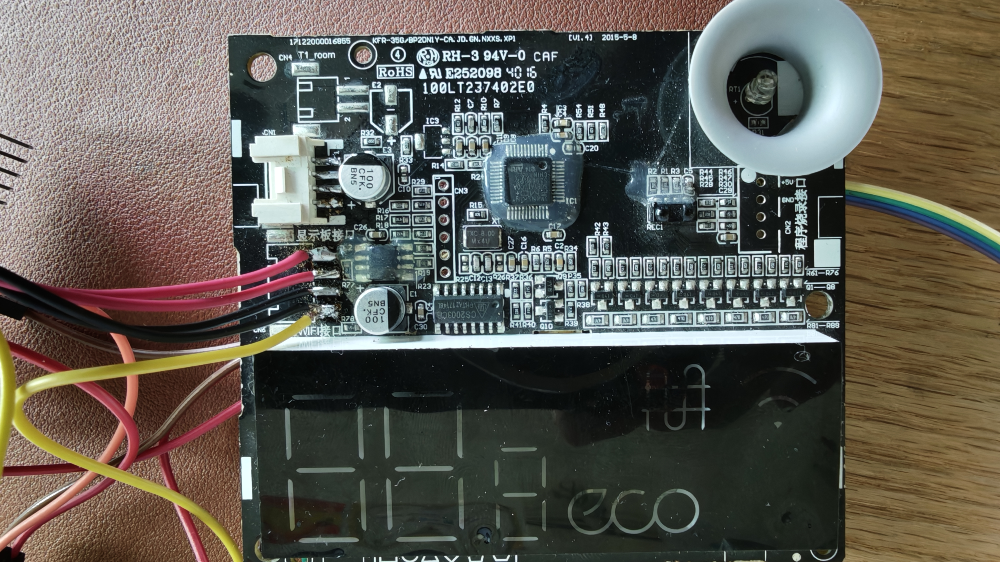
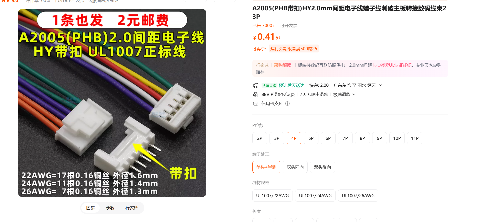
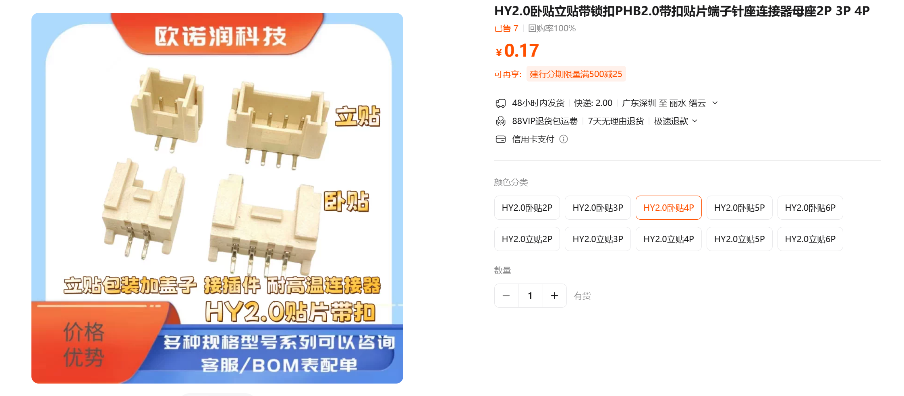
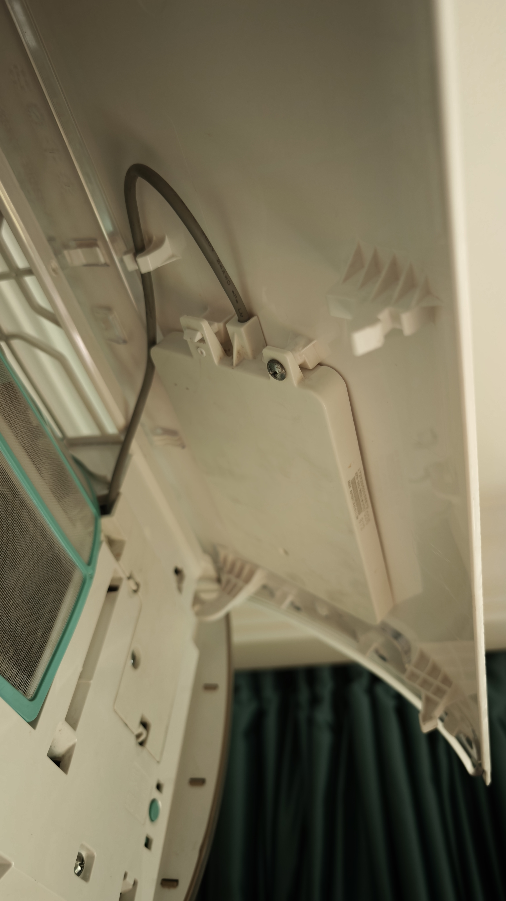
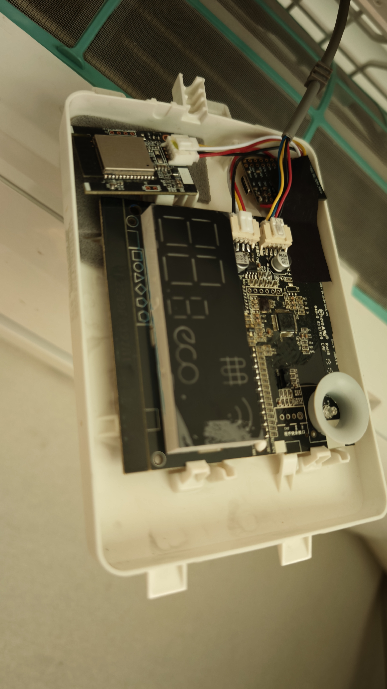
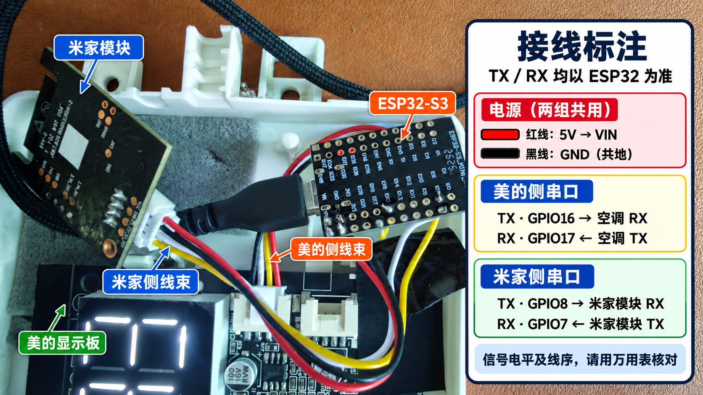
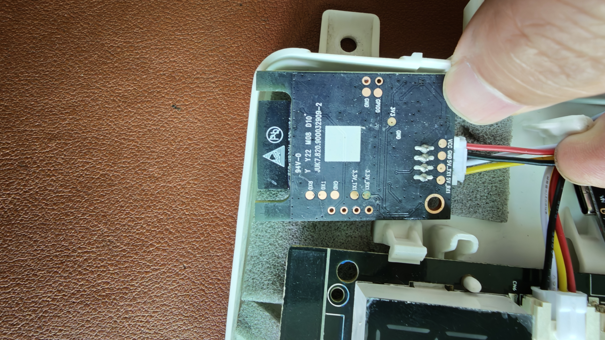
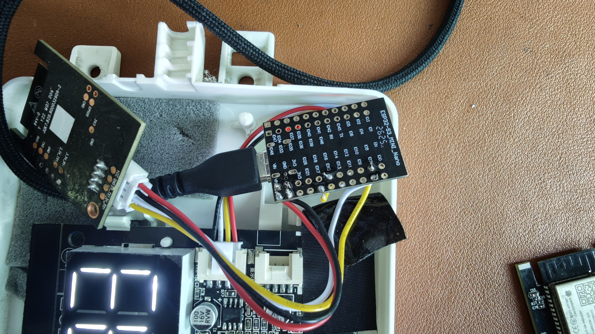
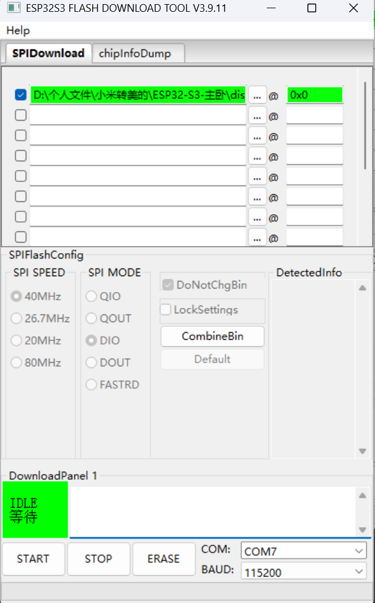

开始前：确认显示板的 Wi-Fi 接口

准备材料
本教程对应主卧实测设备：ESP32-S3 MINI，ESP32-S3R8，16 MB Flash、8 MB OPI PSRAM，以及照片中的美的显示板和米家空调模块。其他型号须先核对接口与协议。
- ESP32-S3 MINI 开发板、米家空调模块、可传输数据的 USB-C 线。
- 两组适配实际接口的四芯线；照片里的商品为 HY / PHB 2.0 mm 带扣 4P，购买前确认外形、间距和方向。
- 万用表、焊接工具、绝缘材料和固定用泡棉；需要保留原装模块时另准备可靠的信号隔离或切换电路。
- Windows 电脑和对应型号固件；首次刷写需要串口下载工具。


找到空调显示板
打开内机面板，找到显示板盒及其线束。先拍照记录原来的插头方向，再拆下显示板盒查看接口。


连接两组串口
ESP32 位于空调与米家模块之间。下表中的 TX / RX 全部以 ESP32 为准：发送接对方接收，接收接对方发送。

| 线路 | ESP32-S3 引脚 | 另一端 | 串口参数 |
|---|---|---|---|
| 美的接收 | GPIO17 · RX | 空调 TX | 9600，8N1 |
| 美的发送 | GPIO16 · TX | 空调 RX | 9600，8N1 |
| 米家接收 | GPIO7 · RX | 米家模块 MCU_TX / GPIO17 | 115200，8N1 |
| 米家发送 | GPIO8 · TX | 米家模块 MCU_RX / GPIO16 | 115200，8N1 |
| 供电与地 | VIN / GND | 经实测确认的 5V 电源 / 公共地 | 信号共地 |
5V_TX1、5V_RX1，不能仅凭名称或线色判断电平。确认电源电压、空闲及传输电平；如果信号超出 ESP32 允许范围，先配置合适的电平转换。不能把 5 V 接到 GPIO。识别米家模块接口
按实物丝印和万用表逐线确认 VCC、GND、业务 TX、业务 RX。照片中模块插头从红线侧可见 VCC、GND、5V_TX1、5V_RX1 标记；仍需通断核对，颜色不作为跨设备标准。模块 TX 接 ESP32 GPIO7，模块 RX 接 GPIO8。
不要把米家模块标为 TX0 / RX0 的日志口当成业务串口。

连接美的显示板与 ESP32
确认显示板的 Wi-Fi 接口及空调侧 TX / RX 后，将空调 TX 接 GPIO17，空调 RX 接 GPIO16；再接好经测量确认的电源及公共地。注意区分显示板与内机主控之间的原有线束。

首次刷写固件
使用乐鑫官方 Windows 图形化工具 Flash Download Tool，通过 USB 选择固件并刷写，不需要自行安装 Python 或输入命令。
确认固件配置
固件将 firmware/secrets.h 中的 Wi-Fi、网页密码等配置编入镜像。为其他环境制作固件时，先从 secrets.example.h 复制并填写自己的配置，再按照 项目 README 编译；不要将配置文件或镜像公开。
连接电脑，确认 COM 端口
先断开空调和其他外部供电，让 ESP32 单独使用 USB 供电。使用支持数据传输的 USB-C 线连接电脑，在 Windows 设备管理器中找到出现的 COM 端口，例如 COM3，并关闭其他占用该端口的串口软件。
打开刷写工具
下载官方压缩包并解压，双击其中的 flash_download_tool*.exe。在启动窗口选择 ChipType：ESP32-S3、WorkMode：Develop；LoadMode 根据实际连接选择，板载原生 USB 选 USB，USB 转串口连接选 UART，然后点击 OK。
选择完整固件及地址
在 SPIDownload 页第一行点击 ...，选择上面的 full-flash-16MB.bin，再勾选这一行左侧的方框。只勾选这一行。
@ 右侧输入框填写 0x0。下图中地址框已正确填写为 0x0；如果地址为空并显示红色，请先填写再开始刷写。
勾选 DoNotChgBin（如果界面提供），保留固件原有 Flash 参数；其余设置保持默认。下方选择实际 COM 端口，BAUD 可先选 115200。不需要单独点击 ERASE；完整镜像会覆盖对应的 16 MB 内容。
开始刷写
点击 START，等待工具显示 FINISH / 下载完成后再复位或重新上电。若连接不上，尝试按住 BOOT、按一下 RESET / EN 后松开 BOOT，再选择进入下载模式后出现的 COM 端口重试；没有这些按键的开发板按板卡说明操作。
- 地址框红色：检查第一行是否勾选，
@右侧是否填写了0x0，以及选择的文件是否为完整固件。 - 找不到或无法打开 COM：重新插拔数据线，在设备管理器核对端口，关闭串口监视器等占用端口的软件。
- 连接超时：按上面的 BOOT / RESET 方法进入下载模式，检查端口是否变化，再点击 START。
- 写入中途失败：检查 USB 数据线与供电，尝试降低 BAUD，再根据工具下方的具体错误信息排查。
Wi-Fi 配网与接入米家
先让 ESP32 接入家里的 2.4 GHz Wi-Fi，再根据需要配置米家模块。可通过蓝牙网页配网；设备连不上路由器时，也可使用设备的临时热点。
通过网页选择 Wi-Fi
- 给设备通电，打开手机或电脑蓝牙并靠近设备。设备蓝牙须处于开启状态；若已关闭，可通过设备管理网页“设置 → 蓝牙功能”重新启用。
- 在顶部选择 蓝牙配网，点击“连接蓝牙设备”，在浏览器列表中选择名称以
Midea-S3-Bridge-开头的设备，再在浏览器的设备选择窗口确认连接；如系统弹出配对请求，请确认。 - 输入设备当前网页登录密码，点击“验证并继续”。等待设备扫描，在列表中选择 2.4 GHz Wi-Fi，输入路由器 Wi-Fi 密码；隐藏网络可在 SSID 输入框手动填写名称，开放网络的密码留空。
- 点击“保存 Wi-Fi 并重启设备”，确认后等待设备重启。手机或电脑连接同一网络，再通过 http://midea-s3.local/ 或路由器列表中的设备 IP 打开管理网页。
网页蓝牙需要通过 HTTPS 或 localhost 打开。Android 可使用 Chrome；Windows 可使用 Chrome 或 Edge；iPhone 可尝试支持 Web Bluetooth 的 Bluefy。附近 Wi-Fi 扫描需要主卧固件 2.5.48 或更新版本，旧固件可手动输入网络名称。Windows 若首次加密配对失败，可在 Windows 蓝牙设置中先配对该设备后返回网页连接。
打开蓝牙配网连接设备的临时热点
- 保持 ESP32 通电。主卧固件 2.5.47 起，在持续无法连接路由器约 90 秒后，会开启
Midea-S3-UART-Setup热点。 - 在手机 Wi-Fi 设置中连接该热点，密码是编译固件时设置的
FALLBACK_AP_PASSWORD。它与设备网页登录密码、路由器密码分别设置。 - 在手机浏览器打开 http://192.168.4.1/，填写家里 2.4 GHz Wi-Fi 的名称和密码，以及设备当前网页登录密码。
- 保存后等待设备重启并连接路由器。手机重新连回家里的 Wi-Fi，再通过
midea-s3.local或路由器设备列表中的 IP 打开管理网页。
路由连接自行恢复时热点会关闭。热点密码须为 8–63 字节；热点启动和配网仍需以设备实测结果为准。
登录设备管理网页
手机或电脑与 ESP32 连接同一局域网，访问 http://midea-s3.local/；如本地域名无法解析，在路由器设备列表中查找 ESP32 的 IP。使用设备当前保存的网页登录密码。
配置米家模块
进入网页“智能接入”，查看米家模块是否识别、握手是否完成。需要重新添加时，使用页面上的“进入米家模组配网”，然后按米家 App 提示添加设备。此操作会清除米家模块原有 Wi-Fi 配置。
设备管理网页：访问与功能
设备管理网页运行在 ESP32 上。手机或电脑与 ESP32 连接同一个局域网后，可以查看状态、控制空调和修改配置。页面名称与功能可能随设备固件版本略有差异，以实际页面为准。
一、打开网页并登录
- 给 ESP32 通电，等待连接路由器。手机或电脑也连接同一局域网；如果设备尚未联网，先使用上面的蓝牙配网或设备热点配网。
- 打开浏览器，访问 http://midea-s3.local/。如果设备修改过“访问地址”，使用修改后的
名称.local。 - 如果
.local无法打开，到路由器的已连接设备列表查找 ESP32 的 IP，再在浏览器输入http://设备IP/。 - 输入设备当前的网页登录密码并登录。首次使用时，该密码由编译固件时的
DEFAULT_WEB_PASSWORD决定；改过密码后使用新密码。使用完成可点右上角“退出登录”。
FALLBACK_AP_PASSWORD。二、空调控制与倒计时
登录后打开顶部“空调控制”。页面显示的是空调回包；发出指令后等待实际状态更新。
- 开关与温度：点击“开机”“关机”，用温度旁的 + / − 调节；需要刷新时点击“查询状态”。
- 模式与风速：点击“切换模式”或“切换风速”，查看页面回报的当前模式和风速。米家七档映射的自定义方法见下方“风速映射”。
- 舒适功能：按需点击“上下摆风”“ECO”或“睡眠”，实际是否支持及状态以空调回包为准。
- 开关机倒计时：在对应区域填写小时和分钟，点击“设置开机倒计时”或“设置关机倒计时”；需要停止时点击对应“取消”按钮。范围为 1 分钟至 24 小时，点击“查询倒计时”可查看空调回报。它是从现在开始的倒计时，并非每周重复预约。
HomeKit 与米家设置
三、在 iPhone 家庭 App 添加 HomeKit
- 确保 ESP32 已连接家里的 Wi-Fi，iPhone 也连接同一局域网；登录设备管理网页，进入顶部“智能接入”。
- 找到“HomeKit”，查看配对状态和页面上显示的配对二维码、配对码。
- 打开 iPhone“家庭”App，点击添加配件，扫描设备网页上的二维码；如果二维码不可用，可按家庭 App 的提示手动输入网页显示的配对码。
- 按家庭 App 提示完成添加，并确认在“家庭”中控制设备后，空调实际状态有变化。网页中的配对码以设备实际显示为准。
HomeKit 支持关机、制冷、制热和自动；除湿和送风可在设备网页“空调控制”操作。要重新配对时，在“智能接入”点击“清除 HomeKit 配对”，并在家庭 App 中移除旧配件，然后重新添加。
四、添加或重新配置米家模块
- 在“智能接入 → 米家模块”查看串口状态、模块网络和协议握手；需要时点击“同步美的状态”。
- 需要重新添加时，点击“进入米家模组配网”，再按米家 App 提示添加设备。
展开“同步统计、串口诊断与查询工具”可查询模块型号、版本、网络等；“测试上报 23°C / 75%”是测试数据，不控制空调。展开“米家扩展属性模拟”可查看模拟范围：模拟值不驱动对应硬件。“脱机模拟调试”开启后不会向美的串口发送硬件控制指令，调试结束请关闭。
Wi-Fi、风速与访问设置
五、在管理网页修改 Wi-Fi
- 在设备已联网时登录管理网页，进入顶部“设置 → Wi-Fi 连接设置”。
- 点击“扫描网络”，从列表选择 2.4 GHz Wi-Fi；隐藏网络可手动输入 SSID。填写路由器 Wi-Fi 密码，开放网络可留空。
- 点击“保存 Wi-Fi 并重启”并确认。ESP32 约 3 秒后重启；将手机或电脑切换到新网络，再通过新网络的
.local或 IP 访问。
如果设备已经无法连接原网络，可改用上方的蓝牙配网或离线热点配网。
六、设置米家七档风速映射
- 进入“设置 → 米家七档风速映射”。第 1 至第 7 档分别填写对应的美的协议风速值。
- 输入 1–100 的整数，并确保从第 1 档到第 7 档严格递增。默认依次为
5、10、30、45、60、80、100；自动档固定为协议值 102。 - 点击“保存映射”。修改会用于后续调档与状态回读，不会立即改变当前风速；如需默认值，点击“恢复默认”后再点击“保存映射”。
这些是协议数值，不是实测转速。空调处于自动模式时，单独调风速可能不会改变实际风速；切换到可调风速的手动模式后再尝试。
七、修改网页登录密码
- 进入“设置 → 修改网页登录密码”。
- 填写当前密码、新密码并再次确认；新密码按页面要求设置为 6–64 个字符。
- 点击“保存密码”。密码保存在设备内，重启后仍有效；以后网页登录及 App / 蓝牙认证使用新密码，已有网页会话可能需要重新登录。
忘记当前密码时，无法通过此表单直接查看原密码；请先查找自己保存的设备配置。刷写完整镜像可能覆盖设备设置与配对记录。
八、修改主机名和访问地址
进入“设置 → 网络名称”。主机名用于向路由器报告设备名称，可用中文，最多 31 个 UTF-8 字节；访问地址是 .local 前的名称，填写 1–31 位英文字母、数字或短横线，首尾不能为短横线，不要填写 .local。
点击“保存并重启”后等待设备重启；使用新的 http://名称.local/ 访问，或使用路由器分配的 IP。点击“默认”后仍需保存才生效。
九、蓝牙开关和固件更新
蓝牙：“设置 → 蓝牙功能”中的“启用 BLE 蓝牙”用于开启或关闭设备蓝牙，切换后设备约 3 秒重启；关闭后蓝牙配网页面和 BLE App 将无法发现设备，可通过已联网的管理网页重新开启。
更新固件：在“设置 → 固件更新”查看当前版本和可用空间，选择对应 ESP32-S3 的 web-OTA.bin，点击“上传并安装”；保持设备供电，等待重启。完整 16 MB 镜像用于首次串口刷写，不用于网页 OTA。下载入口和详细说明见网页更新。
查看状态与排查问题
十、设备状态
顶部“设备状态”可查看固件版本、运行时间、CPU 负载估算、内部堆内存、Flash 与 OTA 空间、PSRAM，以及 Wi-Fi IP、信号、蓝牙连接和网络健康。IP 可用于 .local 无法解析时访问网页；CPU 数值是采样估算。
十一、串口调试
顶部“串口调试”显示 ESP32 与美的空调、米家模块的收发记录；RX 表示设备接收，TX 表示设备发送。“自动滚动”控制窗口跟随，“清空显示”清空当前显示。原始十六进制透传直接向美的串口发送数据，只在了解协议时使用。
“IO16 独立 RX 调试”打开后，IO16 切为接收，并暂停 ESP32 向美的发送；关闭后恢复 TX。独立窗口的“清空日志”会清除对应设备日志，重启默认恢复 TX。
装回并检查
断电整理线束与绝缘，固定模块，避免焊点接触金属、压住线缆或遮挡按键。确认插头插牢后装回显示板盒。
- 确认空调显示板正常，ESP32 网页能够打开。
- 在网页“空调控制”查看开关、模式与温度是否来自实际空调回包。
- 在“串口调试”观察美的空调的发送与回包，以及米家模块握手。
- 先分别尝试开关机、模式和温度，再观察空调实际动作与网页、米家状态是否一致。
- 如保留原装 Wi-Fi，也检查原装控制是否正常；异常时先排查发送线路隔离。
以后使用网页更新
设备已正常运行时，进入网页“设置”中的固件更新，选择 OTA 应用镜像上传；完成后设备会自动重启。
web-OTA.bin，不要上传完整 16 MB 镜像。更新期间保持供电和网络连接，等待设备重启后重新打开网页。此固件包含本机配置，请注意保管。常见问题
网页无法打开或一直连接中
先确认 ESP32 和访问设备在同一局域网，尝试用路由器分配的 IP 访问；再检查 Wi-Fi 信号、设备供电和网页“设备状态”。如果重启后恢复，记录复发时的网络与串口状态。
米家有指令，空调没有动作或返回 -4004
在串口调试中检查 ESP32 是否发送美的控制帧、是否收到有效 C0 状态，以及回报的状态是否与目标一致。-4004 可能表示在等待时间内未确认目标，并不单独说明是哪一根线出错。
原装美的 Wi-Fi 控制受影响
核对 GPIO16 和原装模块 TX 是否同时连接空调 RX，以及是否有隔离或切换电路。空闲释放只能减少空闲冲突，不能解决同时驱动。
倒计时与预约有什么区别？
项目支持美的原生开机、关机倒计时，范围 1–1440 分钟，实际结果以空调回包为准。当前版本没有网页本地的指定日期或每周重复预约。